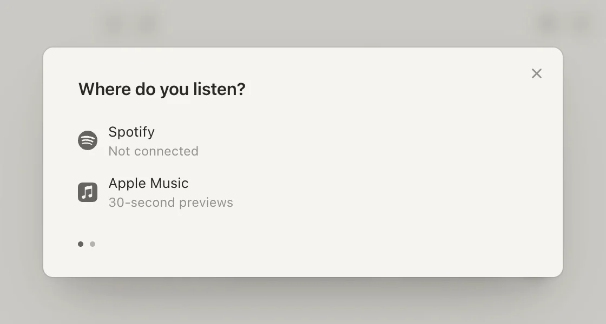
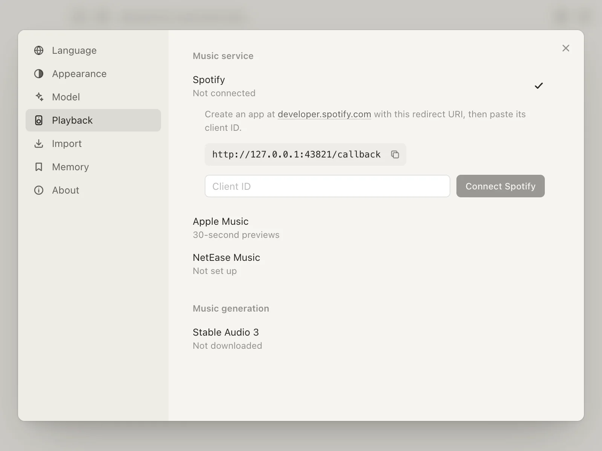
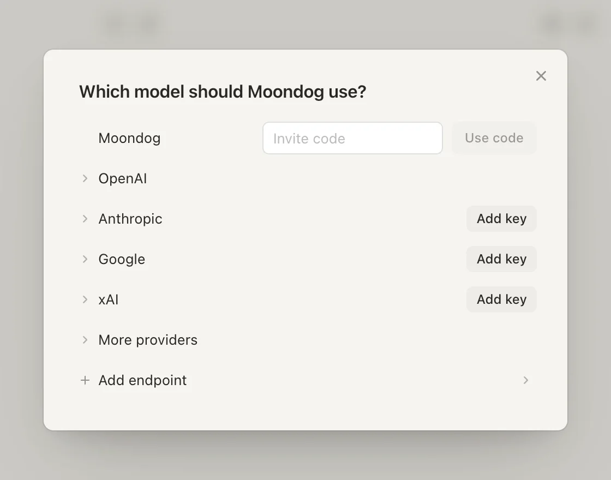
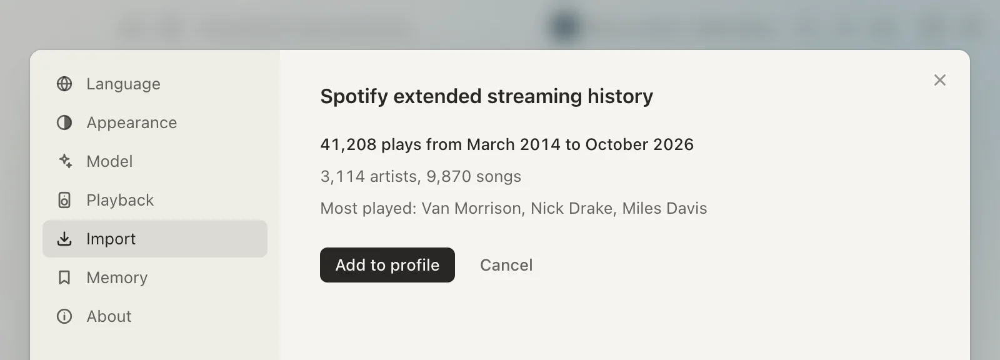
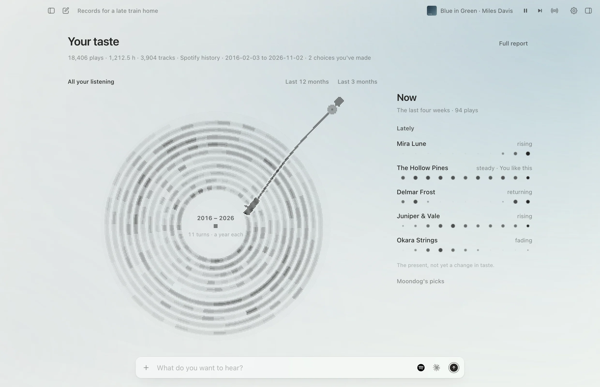
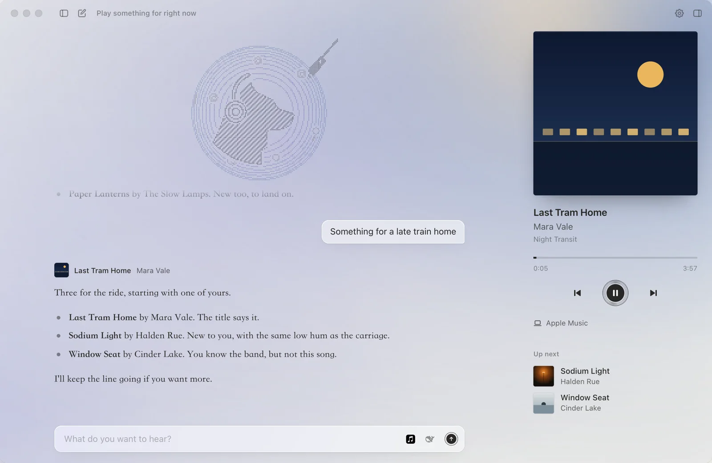

Getting started
From the download to the first song, in five steps. When it first opens, Moondog asks two things: where you listen, and which model it talks through.
1. Install Moondog
On a Mac with Apple silicon, open the download and drag Moondog to Applications. It's notarized by Apple.
Download for Mac {{mac.version}}, for Apple silicon.
Other systems and the terminal are under Get Moondog. This guide follows the Mac app; the first run asks the same two questions everywhere.
2. Choose where you listen
Moondog plays on one music service at a time. Pick one now. You can change it later in Settings (⌘,), under Playback.

Apple Music
There is nothing to set up. Songs play as 30-second previews, each with a link to the whole song.
On a Mac with an Apple Music subscription, Moondog plays whole songs. Open Settings, then Playback, and choose Play full songs under Apple Music.
Spotify
Spotify asks each listener to register an app of their own, and asks that its owner has Premium. This is the longest step, and you do it once.
- Open the Spotify Developer Dashboard and create an app. Any name will do.
- Give the app this redirect URI:
http://127.0.0.1:43821/callback - Copy the app's client ID.
- In Moondog, open Settings, then Playback. Paste the client ID under Spotify and choose Connect Spotify. Your browser opens for Spotify's own sign-in.

Music then plays on your active Spotify device, so open Spotify on a computer, a phone or a speaker first.
NetEase Music
For listeners in mainland China. Whole songs play through NetEase's own command line tool, which needs Node.js. The first run lists NetEase Music once that tool is installed, so pick Apple Music for now, or close the question.
Then open Settings, Playback, NetEase Music. It shows the command for your system. On a Mac with Homebrew:
npm install -g @music163/ncm-cli && brew install mpv && ncm-cli loginRun it in Terminal, then choose Check again.
3. Choose a model
Moondog talks through a language model. Your history and your taste page work without one, so the close button can skip this step.

With an invite code
Moondog's own model is in a closed test. If you have a code, type it beside Moondog and choose Use code. It needs no account and no API key.
With your own model
OpenAI takes a ChatGPT subscription, with a sign-in in your browser, or an API key. Anthropic, Google and xAI take an API key: choose Add key.
Any other service that speaks OpenAI's or Anthropic's API goes in with Add endpoint: its address, its key and its model names. A model that runs on your own computer goes in the same way.
The first run ends once a model can answer. To change the model later, open Settings, then Model.
4. Bring your history
Open Settings, then Import, or drop a file anywhere on the window. Moondog shows what's inside before anything is saved, and it never changes the file.

- Spotify, every year
- On Spotify's account privacy page, use Download your data and ask for your extended streaming history. Spotify emails a link when the ZIP is ready, which can take days. Choose the ZIP as it is. It needs no Spotify sign-in.
- Spotify, right now
- With Spotify connected, Recent Spotify listening reads your top tracks, your recent plays and your saved music.
- Apple Music
- In Music on a Mac, choose File, Library, Export Library, then choose the file it saves.
- YouTube Music
- A Google Takeout export of YouTube and YouTube Music.
- Last.fm
- Type your username. Your recent listening must be public on Last.fm.
- ListenBrainz
- A saved listens file.
- A playlist
- Open the library (⌥⌘L), choose +, then Import a playlist, and paste the link of a public playlist on Spotify, Apple Music, NetEase Music or QQ Music. Tick Let it shape my taste if it should count.
Choose Add to profile, and your profile shows in the conversation. The terminal guide has every format.
Then open Taste (⌥⌘T). It presses your history as a record, darker where you played more, and it lists the artists and songs behind it.

With a model set up, ask Moondog to build your profile. It writes a reading of everything you imported, usually in a few minutes, and it marks what is its own interpretation.
5. Ask for music
Type what you want to hear, in your own words, in any of ten languages. Or click the record's arm, and Moondog picks something for right now.

The reply says what Moondog picked, and why each song is there. The player shows what's playing and what's up next: play a song now, or take one out.
When Moondog gets you wrong, say so. “Never play this again” is enough. Or open Taste, pick a song or an artist, and choose I like this or Keep it out.
On a Mac with Apple silicon, Moondog can also make music itself. Set up Stable Audio 3 once in Settings, under Playback. Then press the On Air mark (⌃⌘O), and Moondog keeps making music from your taste until you stop it.
The terminal has the same room, with the same profile, sign-ins and conversations. The terminal guide covers it.